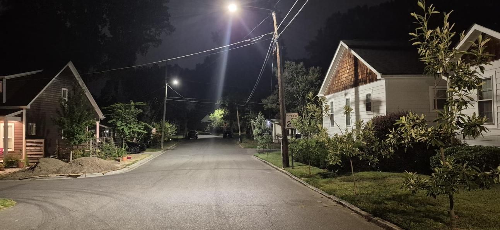
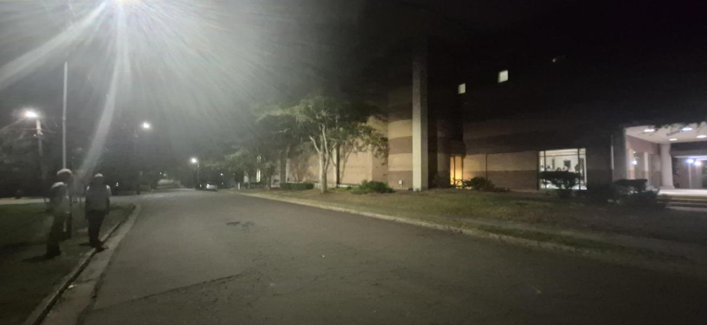

A national lighting engineer measured our streetlights in September. Quiet residential intersections are lit 4 to 7 times brighter than national standards, and glare pours into bedrooms. Brighter isn’t safer. Durham can fix this.

3–5 fc
measured at Maryland & Woodrow, where the standard for a quiet local intersection is 0.7 fc
80×
the maximum light trespass recommended for single-family homes, at Alabama & Lawndale
150W
fixtures on residential streets, where the engineer recommends 25–35W, shielded
4000K
blue-white light, where the American Medical Association recommends 3000K or warmer for roadways
What the expert found
On September 17, 2026, Dane Sanders, PE, President of the lighting design firm Clanton & Associates, presented at the NC School of Science and Math and then walked the neighborhood just west of campus with residents, photographing and measuring the streetlights. These streets are classified as local streets with low pedestrian activity. The national standard (IES RP-8-25) targets about 0.7 footcandles at their intersections and 0.2 on sidewalks. Every site he measured exceeded even the levels recommended for the busiest intersections near major event centers.

Location 1
A 150-watt, 4000K LED with a very wide, forward-throw beam lights up the NCSSM building façade across the street. Measurements ranged from 3.0 to 5.0 footcandles, four to seven times the standard for this intersection and above the level for a major downtown crossing with heavy foot traffic. The engineer’s recommendation: 25–35W LEDs (3,000–5,000 lumens), shielded to keep light off private property.
Location 2
The same 150W, 4000K fixtures produce glare that forces eyes to adjust to brightness, which makes it harder to see into the darker yards and side streets next to the road. Lowering light levels and glare would improve visibility there.
Location 3
Homes here sit close to the street. Light falling on them measured over 8.0 footcandles, more than 80 times the IES maximum of 0.1 footcandle for single-family residences. Meanwhile, nearby unlit streets felt dangerously dark by contrast.
Read the full report: Durham Street Lighting Observations, Clanton & Associates (PDF)
Comments from neighbors
“I’m literally wearing sunglasses to walk at night.”
“The light trespass from Durham’s streetlights violates our own city ordinance, by a lot.”
“Asking thousands of households to buy expensive blackout curtains is just terrible.”
“East Durham has malfunctioning streetlights that have been bright blue for months. Not healthy.”
Why it matters
Glare forces our eyes to adapt to brightness, then take minutes to readjust in darker spots. Matching light to the street preserves night vision for drivers, walkers and cyclists, and deters crime.
Blue-rich light suppresses melatonin and shifts circadian timing. Light pouring into bedrooms has been linked to sleep disruption and other health effects.
Birds, insects and other species depend on natural dark. Poorly controlled lighting alters breeding, foraging and migration.
A 150W fixture where 25–35W would do wastes electricity on every pole, every night.
Developed by the Illuminating Engineering Society and DarkSky International.
Useful
Light only where there’s a clear need.
Targeted
Aim and shield it onto the street, not into homes.
Low level
No more light than the task needs.
Controlled
Dim or switch off when it isn’t needed.
Warm-colored
2700K, 2200K or amber in neighborhoods.
What we’re asking the City
1 · Right away
Swap them for lower-wattage, warmer, shielded fixtures. Where homes on both sides of a street suffer light trespass, replace the whole fixture: a shield on one side just pushes the glare to the other.
2 · Next budget
Hire a lighting designer to review every light with GIS and measurements, engage residents, address police department concerns, recommend better fixtures, and evaluate whether Durham should buy out its streetlight contract with Duke Energy, as other cities have.
Santa Ana, California
Built a master plan from citywide photometrics, GIS and community input, identifying priority areas and 24 example projects.
Davis, California
After residents objected to harsh new LEDs, the city tested options with the public and switched residential streets to 2700K at lower wattage.
Chicago, Illinois
Piloted its LED conversion with a long public comment period and chose 3000K fixtures that can be dimmed remotely.
Pasadena, California
Caps new streetlights at 2700–3000K and checks with residents before installing.
Take action
Clocks fall back on Sunday, November 1, and evenings get dark early. It’s the right moment for Council to hear from neighbors. One short email makes a difference. Start with our template or write your own message.
Write to CouncilOr email council@durhamnc.gov or call the Council office at 919-560-4396.
Share this page on your neighborhood listserv, Nextdoor or social media. Photos of glare on your street help.
A small group of neighbors is working with city staff, the Environmental Affairs Board, and dark-sky advocates. To help, write to ffbroadwell@gmail.com.